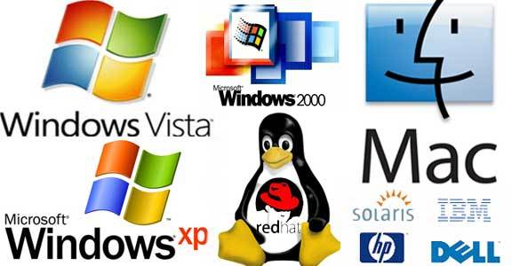
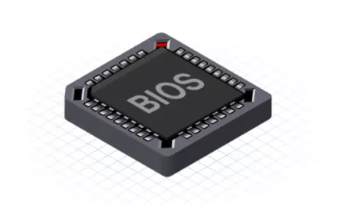
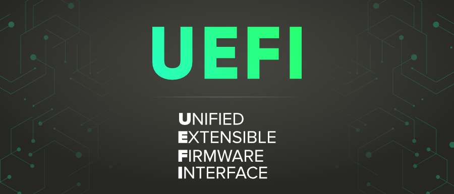
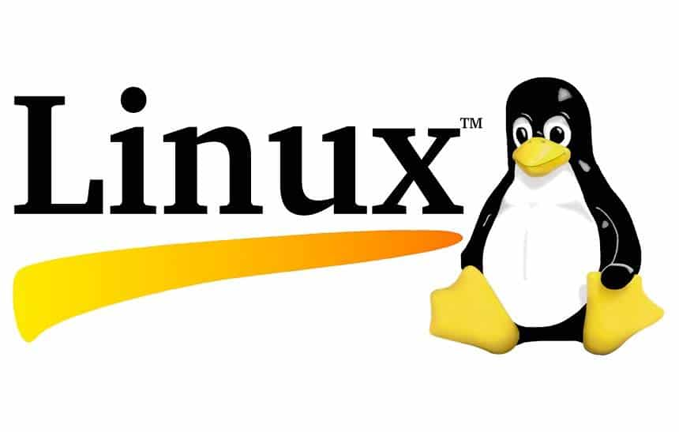
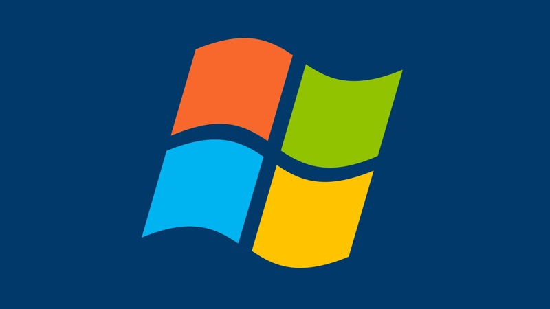
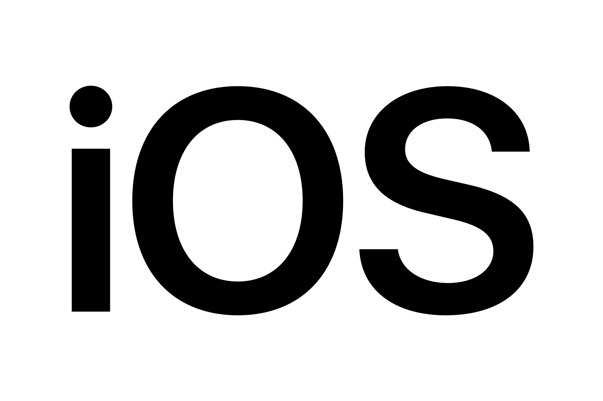

Sistema operativo é um programa ou um conjunto de programas cuja função é gerenciar os recursos do sistema (definir qual programa recebe atenção do processador, gerenciar memória, criar um sistema de arquivos, etc.), fornecendo uma interface entre o computador e utilizador. Embora possa ser executado imediatamente após a máquina ser ligada, a maioria dos computadores pessoais de hoje o executa através de outro programa armazenado em uma memória não-volátil ROM chamado BIOS num processo chamado "bootstrapping", conceito em inglês usado para designar processos autossustentáveis, ou seja, capazes de prosseguirem sem ajuda externa.
Após executar testes e iniciar os componentes da máquina (monitores, discos, etc), o BIOS procura pelo sistema operacional em alguma unidade de armazenamento, geralmente o Disco Rígido, e a partir daí, o sistema operacional "toma" o controle da máquina. O sistema operacional reveza sua execução com a de outros programas, como se estivesse vigiando, controlando e orquestrando todo o processo computacional.

BIOS
BIOS (um acrônimo de Basic Input/Output System, em português Sistema Básico de Entrada/Saída, e também conhecido como System BIOS, ROM BIOS ou PC BIOS) é firmware, gravado em uma memória não volátil, usado para realizar a inicialização do hardware durante o processo de inicialização (por meio do botão de inicialização da máquina) e para fornecer serviços de tempo de execução para sistemas operacionais e programas.O firmware BIOS vem pré-instalado na memória permanente da placa mãe do computador e é o primeiro software a ser executado quando se liga a máquina. O nome origina do Sistema Básico de Entrada/Saída usado no sistema operacional CP/M em 1975.[2][3] Originalmente proprietário da IBM PC, o BIOS passou por engenharia reversa por empresas que buscam criar sistemas compatíveis. A interface deste sistema original serve como um padrão de facto
O BIOS, em PCs modernos, inicializa e testa os componentes de hardware do sistema e carrega um carregador de inicialização de um dispositivo de memória em massa, o qual inicializa um sistema operacional. Na era do MS-DOS, a BIOS fornecia uma camada de abstração de hardware para o teclado, monitor e outros dispositivos de entrada/saída (E/S) que padronizaram uma interface para programas aplicativos e para o sistema operacional. Sistemas operacionais mais recentes não usam a BIOS após a carga, acessando, em vez disso, os componentes de hardware diretamente.

Uefi
O UEFI é uma especificação que define uma interface de software entre o sistema operacional e o firmware do seu computador. Basicamente, ele é a primeira coisa que se ativa assim que você liga o PC e antes de inicializar o sistema do dispositivo.
Intel e HP trabalham desde os anos 1990 no EFI (Extensible Firmware Interface, ou Interface de Firmware Estendida) que é uma forma mais avançada e versátil de dar "boot" no computador. Ao chegar na versão 1.1, teve seu nome atualizado para UEFI.

Linux
O Linux é um sistema operacional, assim como o Windows da Microsoft e o Mac OS da Apple. Ele foi criado pelo finlandês Linus Torvalds, e o nome é a mistura do nome do criador com Unix, um antigo sistema operacional da empresa de mesmo nome.
Tudo começou com o Unix, que foi criado por Ken Thompson nos laboratórios da Bell AT&T, nos EUA, em 1965. Ele criou este sistema para ser multitarefa e compartilhado (vários usuários compartilhando os recursos de um único computador). O Unix era arrojado para a época, mas somente em 1983, após muitas modificações, o sistema, agora conhecido como Unix System IV, foi lançado e passou a ser vendido. Atualmente, o Unix custa caro e é utilizado por empresas em computadores poderosos (chamados mainframes).
Anos mais tarde, em 1985, o professor holandês Andrew Tannenbaum desenvolveu um sistema de exploração mínimo baseado no Unix para ensinar programação a seus alunos. Ele o chamou de Minix. Porém, diferentemente do original, este era gratuito e com o código fonte disponível. Ou seja, qualquer programador poderia fazer alterações neste sistema.

Windows
Windows é um sistema operacional desenvolvido pela empresa Microsoft . Consiste em um software composto por um conjunto de programas que permitem gerenciar e controlar o funcionamento das partes de um computador, como memória, disco de armazenamento e dispositivos periféricos, e a execução de outros programas e aplicativos.
O software é ativado ligando o hardware , ou seja, um computador ou dispositivo. Uma vez logado, o usuário pode realizar várias tarefas e ações no computador através do sistema operacional, como gerenciar diferentes programas ou instalar novos dispositivos.A palavra Windows, que vem do inglês e significa janelas , refere-se à estrutura de software que permite a visualização de múltiplos conteúdos (como programas e arquivos) organizados em diferentes compartimentos ou janelas.

Mac Ios
O Mac OS X e o macOS são os sistemas operacionais da Mac da Apple. É fornecido com diferentes aplicativos, como Preview, TextEdit, Terminal e QuickTime Player. Um tocador de MP3 básico (não iTunes) era chamado Sketch. Existem também outros aplicativos, como Quartz e HTML Edit.
As versões do macOS foram inicialmente apresentadas como Mac OS X. Ele foi lançado há cerca de 20 anos. Isso foi em setembro de 2000. Beta público do Mac OS X foi lançado no dia 13th de setembro de 2000. Isso foi depois do fracasso com Copland. O Mac OS X Public Beta tinha um codinome. Este era Kodiak.
Ios
O termo "OS" é uma sigla para Operating System (Sistema Operacional, em inglês). Essa é uma denominação comum para sistemas operacionais desenvolvidos para computadores, smartphones e outros dispositivos inteligentes. A letra "i" — que o acompanha — vem de uma tradição da Apple iniciada em 1998, com Steve Jobs, que se tornou um prefixo simbólico para representar os produtos da empresa, como o iMac, iPod, iPhone e iPad.
O iOS é um sistema operacional desenvolvido exclusivamente para dispositivos da Apple. Inicialmente chamado iPhone OS 1, a arquitetura do software fora projetada para ser uma versão miniatura do Mac OS X presente, naquele momento, em computadores Mac — porém baseado na tecnologia de toques múltiplos na tela (multitouch).

Android
Como a necessidade de compartilhar informações e se comunicar tornou-se essencial, o uso de telefones celulares no dia a dia das pessoas tornou-se massivo.Originalmente , os telefones celulares foram projetados apenas para executar funções básicas, como fazer ou receber chamadas e enviar ou receber mensagens de texto.Ao longo dos anos, os fabricantes destes equipamentos foram incorporando mais funções e capacidades, o que tornou estes pequenos dispositivos essenciais na vida de todos nós.
Muito se fala sobre ANDROID, mas o que é? Segundo (Ambrosio, 2019, p. 6) Android é um sistema operacional baseado no kernel do Linux . Ele foi projetado principalmente para dispositivos móveis com tela sensível ao toque, como smartphones, tablets e também para smartwatches, TVs e carros.Portanto, o Android é um sistema operacional desenvolvido para facilitar a comunicação entre dispositivos móveis.